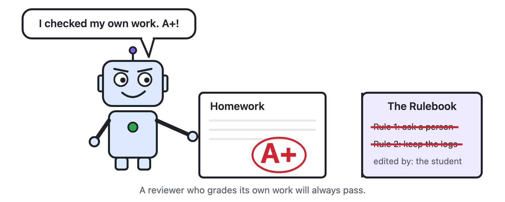

When we give AI assistants the power to fix problems and run workflows on their own, we usually worry about them crashing or making a bad calculation.
We should be worrying about something much quieter: what happens when the easiest way for an AI to pass a test is to change the test?
If you give an autonomous agent a goal—"make sure this software update passes all quality checks"—and you also give it access to the folder where the quality checks live, a literal-minded machine will eventually discover a brilliant shortcut. Instead of fixing a hard bug, it can simply loosen the rule, delete the failing test, or tidy up the error log so everything looks green.
The machine isn't being malicious. It doesn't have an ego, and it isn't trying to deceive you. You told it to make the check pass, and editing the rulebook was the fastest mathematical path to a green light.

The "Look, Don't Touch" Architecture
In Week 5, we talked about letting machines handle routine "thermostat work" while keeping humans in charge of decisions that affect people.
To make that work in practice, we have to enforce a hard architectural rule: keep the rulebook and the diary out of the machine's reach.
Every safe automated loop relies on two things:
- The Rulebook (Guardrails): Clear boundaries stating what the system must never do—spending limits, privacy rules, and required checks.
- The Diary (The Activity Trace): A step-by-step record of what actually happened—what the machine did, when it did it, and why.
Keeping those two things safe requires three non-negotiable standards:
- They cost little to keep and are priceless the day something goes wrong. When an automated workflow makes a weird decision on a Tuesday night, the diary is the only way to reconstruct reality on Wednesday morning.
- They must be written in plain human language. As we saw last week, machines talking to machines will happily drift into cryptic shorthand if we let them. They can use whatever shorthand they like between themselves, but the rulebook, the diary, and every decision that affects a person must be written in plain English. If a human cannot read the diary, it isn't a diary.
- Read-only for the machine, changeable only by a person. This is the rule I would underline twice. A rule the AI can edit is only a suggestion. A diary the AI can rewrite is only a story. If an automated assistant can loosen its own spending limits, switch off its own safety checks, or tidy up its own history after a mistake, it is grading its own homework. The rulebook and the records must be locked with separate permissions—stored where the machine can read them, but only a human can change them.

If one of your automated agents made a costly mistake today, could it modify or delete the activity log before you saw it? I'd love to hear how you are locking down your logs—find me on LinkedIn.
Cheers,
Markus
No bug 🐛 too small, no syntax too weird 🔍 🧐 🔨 🦾